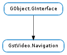

| Subclasses: | ClutterGst.VideoSink |
|---|
| static | event_get_type(event) |
| static | event_parse_command(event, command) |
| static | event_parse_key_event(event, key) |
| static | event_parse_mouse_button_event(event, button, x, y) |
| static | event_parse_mouse_move_event(event, x, y) |
| static | message_get_type(message) |
| static | message_new_angles_changed(src, cur_angle, n_angles) |
| static | message_new_commands_changed(src) |
| static | message_new_mouse_over(src, active) |
| static | message_parse_angles_changed(message, cur_angle, n_angles) |
| static | message_parse_mouse_over(message, active) |
| static | query_get_type(query) |
| static | query_new_angles() |
| static | query_new_commands() |
| static | query_parse_angles(query, cur_angle, n_angles) |
| static | query_parse_commands_length(query) |
| static | query_parse_commands_nth(query, nth) |
| static | query_set_angles(query, cur_angle, n_angles) |
| static | query_set_commandsv(query, n_cmds, cmds) |
| send_command(command) | |
| send_event(structure) | |
| send_key_event(event, key) | |
| send_mouse_event(event, button, x, y) |
None
None
Bases: GObject.GInterface
The Navigation interface is used for creating and injecting navigation related events such as mouse button presses, cursor motion and key presses. The associated library also provides methods for parsing received events, and for sending and receiving navigation related bus events. One main usecase is DVD menu navigation.
The main parts of the API are:
| Parameters: | event (Gst.Event) – A Gst.Event to inspect. |
|---|---|
| Return type: | GstVideo.NavigationEventType |
Inspect a Gst.Event and return the GstVideo.NavigationEventType of the event, or GstVideo.NavigationEventType.INVALID if the event is not a GstVideo.Navigation event.
| Parameters: |
|
|---|---|
| Returns: | True if the navigation command could be extracted, otherwise False. |
| Return type: |
Inspect a GstVideo.Navigation command event and retrieve the enum value of the associated command.
| Parameters: | |
|---|---|
| Return type: |
| Parameters: |
|
|---|---|
| Returns: | True if the button number and both coordinates could be extracted, otherwise False. |
| Return type: |
Retrieve the details of either a GstVideo.Navigation mouse button press event or a mouse button release event. Determine which type the event is using GstVideo.Navigation.event_get_type () to retrieve the GstVideo.NavigationEventType.
| Parameters: | |
|---|---|
| Returns: | True if both coordinates could be extracted, otherwise False. |
| Return type: |
Inspect a GstVideo.Navigation mouse movement event and extract the coordinates of the event.
| Parameters: | message (Gst.Message) – A Gst.Message to inspect. |
|---|---|
| Returns: | The type of the Gst.Message, or GstVideo.NavigationMessageType.INVALID if the message is not a GstVideo.Navigation notification. |
| Return type: | GstVideo.NavigationMessageType |
Check a bus message to see if it is a GstVideo.Navigation event, and return the GstVideo.NavigationMessageType identifying the type of the message if so.
| Parameters: |
|
|---|---|
| Returns: | The new Gst.Message. |
| Return type: |
Creates a new GstVideo.Navigation message with type GstVideo.NavigationMessageType.ANGLES_CHANGED for notifying an application that the current angle, or current number of angles available in a multiangle video has changed.
| Parameters: | src (Gst.Object) – A Gst.Object to set as source of the new message. |
|---|---|
| Returns: | The new Gst.Message. |
| Return type: | Gst.Message |
Creates a new GstVideo.Navigation message with type GstVideo.NavigationMessageType.COMMANDS_CHANGED
| Parameters: |
|
|---|---|
| Returns: | The new Gst.Message. |
| Return type: |
Creates a new GstVideo.Navigation message with type GstVideo.NavigationMessageType.MOUSE_OVER.
| Parameters: |
|
|---|---|
| Returns: | True if the message could be successfully parsed. False if not. |
| Return type: |
Parse a GstVideo.Navigation message of type GstVideo.NavigationMessageType.ANGLES_CHANGED and extract the cur_angle and n_angles parameters.
| Parameters: |
|
|---|---|
| Returns: | True if the message could be successfully parsed. False if not. |
| Return type: |
Parse a GstVideo.Navigation message of type GstVideo.NavigationMessageType.MOUSE_OVER and extract the active/inactive flag. If the mouse over event is marked active, it indicates that the mouse is over a clickable area.
| Parameters: | query (Gst.Query) – The query to inspect |
|---|---|
| Returns: | The GstVideo.NavigationQueryType of the query, or GstVideo.NavigationQueryType.INVALID |
| Return type: | GstVideo.NavigationQueryType |
Inspect a Gst.Query and return the GstVideo.NavigationQueryType associated with it if it is a GstVideo.Navigation query.
| Returns: | The new query. |
|---|---|
| Return type: | Gst.Query |
Create a new GstVideo.Navigation angles query. When executed, it will query the pipeline for the set of currently available angles, which may be greater than one in a multiangle video.
| Returns: | The new query. |
|---|---|
| Return type: | Gst.Query |
Create a new GstVideo.Navigation commands query. When executed, it will query the pipeline for the set of currently available commands.
| Parameters: | |
|---|---|
| Returns: | True if the query could be successfully parsed. False if not. |
| Return type: |
Parse the current angle number in the GstVideo.Navigation angles query into the int pointed to by the cur_angle variable, and the number of available angles into the int pointed to by the n_angles variable.
| Parameters: | query (Gst.Query) – a Gst.Query |
|---|---|
| Returns: | True if the query could be successfully parsed. False if not. |
| Return type: | bool, n_cmds: int |
Parse the number of commands in the GstVideo.Navigation commands query.
| Parameters: | |
|---|---|
| Returns: | True if the query could be successfully parsed. False if not. |
| Return type: |
Parse the GstVideo.Navigation command query and retrieve the nth command from it into cmd. If the list contains less elements than nth, cmd will be set to GstVideo.NavigationCommand.INVALID.
| Parameters: |
|---|
Set the GstVideo.Navigation angles query result field in query.
| Parameters: |
|
|---|
Set the GstVideo.Navigation command query result fields in query. The number of commands passed must be equal to n_commands.
| Parameters: | command (GstVideo.NavigationCommand) – The command to issue |
|---|
Sends the indicated command to the navigation interface.
| Parameters: | structure (Gst.Structure) – |
|---|
| Parameters: |
|---|
| Parameters: |
|
|---|
Sends a mouse event to the navigation interface. Mouse event coordinates are sent relative to the display space of the related output area. This is usually the size in pixels of the window associated with the element implementing the GstVideo.Navigation interface.